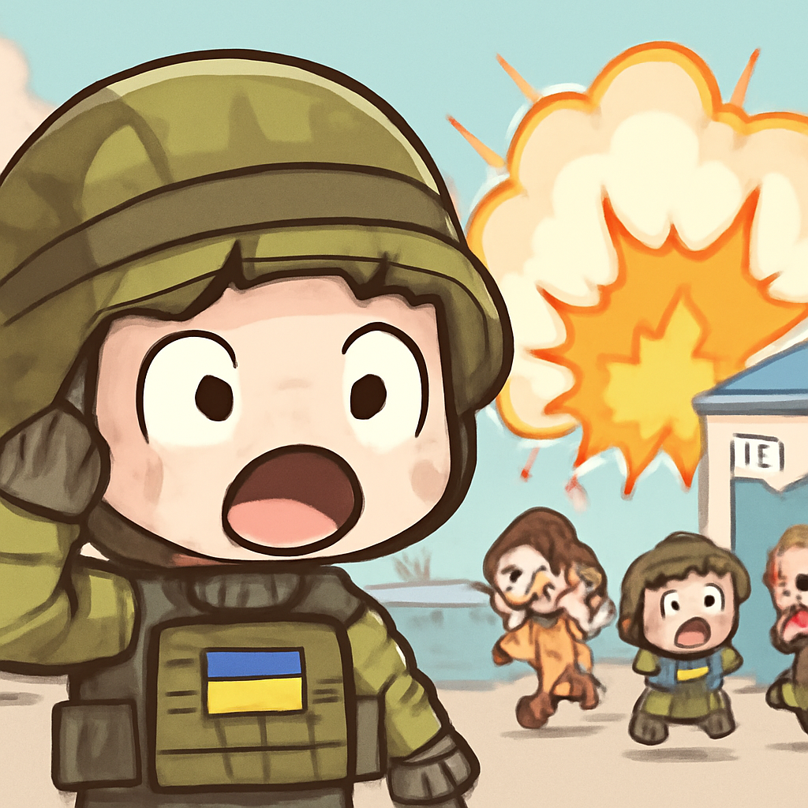
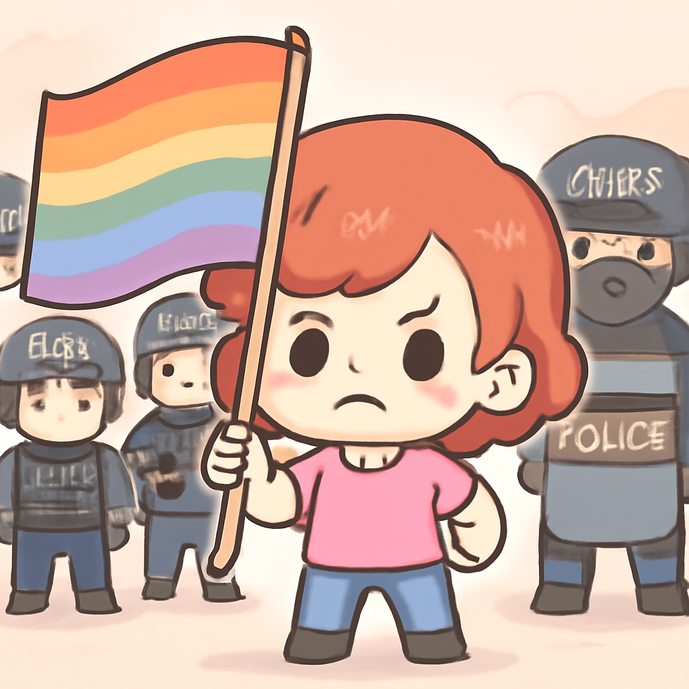

其一 · 烏克蘭基輔 · 俄軍炸毀火車站
俄軍在基輔火車站發動攻擊，造成混亂。

在烏克蘭基輔，俄軍炸毀了一列靜止的火車，當時英國前首相約翰遜等高官剛離開。這次襲擊不僅造成了六人喪生，還使得該地區的緊張局勢再次升高，讓人懷疑俄方的意圖。看來，這場戰爭還真的沒有要停下來的意思。
🔗 原始新聞 ↗
2026-09-14 · 以古觀今，以笑抗愁
俄軍在基輔火車站發動攻擊，造成混亂。

在烏克蘭基輔，俄軍炸毀了一列靜止的火車，當時英國前首相約翰遜等高官剛離開。這次襲擊不僅造成了六人喪生，還使得該地區的緊張局勢再次升高，讓人懷疑俄方的意圖。看來，這場戰爭還真的沒有要停下來的意思。
🔗 原始新聞 ↗
印尼渡輪在爛天氣中翻覆，六人遇難。
在印尼雅加達，渡輪Virgo Transport 8因遭遇惡劣天氣而翻覆，造成六人遇難，還有130人失踪。搜救工作正在進行中，這一悲劇再次提醒人們，海上旅行的危險性可不是開玩笑的。希望更多人能安全回家，尤其是在這種天氣下。
🔗 原始新聞 ↗
土耳其警方突襲LGBTQ酒吧，引發人權爭議。

土耳其伊斯坦堡的警方在最近的突襲中拘捕了多名LGBTQ+活動人士，這引發了人權團體的強烈譴責。他們指責政府利用“家庭價值觀”的口號，對這個社群發動攻擊。這樣的行為不僅影響了社會的多樣性，也讓我們再次反思自由的真正意義。
🔗 原始新聞 ↗
沖繩選舉保守派候選人當選，影響對中國政策。
在日本沖繩，保守派候選人小嘉田選上了新知事，這對於該地區的對中國政策可能會有顯著影響。隨著日本政府加強軍事建設，這次選舉結果無疑為未來的外交關係增添了新的變數。看來，政壇上的“選舉熱”還是讓人感覺到些許的涼意。
🔗 原始新聞 ↗
瑞典選舉結果接近平手，政治局勢不明朗。
在瑞典的最新選舉中，中心左派和中心右派之間的票數幾乎平手，讓未來的政治局勢變得更加不明朗。這樣的情況讓許多人不禁想問：瑞典的政治是不是也要進入“平手時代”了？希望選民們能快點給出答案，不然我們可能要等到下次選舉才能知道了。
🔗 原始新聞 ↗